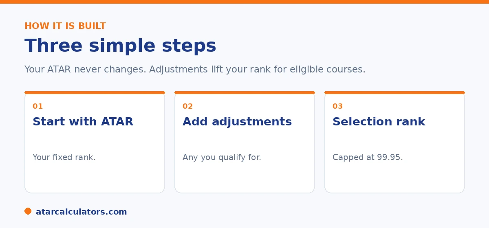

Here is the short version. The formula is your ATAR plus any adjustment factors, which equals your selection rank. The result is capped at 99.95. Some adjustments, like subject and location ones, are usually added automatically. Others, like the Educational Access Scheme and elite athlete schemes, need a separate application. Because each university sets its own schemes, your selection rank can be different for each course.
Selection rank can sound technical, but the maths behind it is straightforward. It is mostly a matter of knowing which adjustments you qualify for.
Below is the formula and each step. To do the sum for yourself, use our selection rank calculator.
Key takeaways
- The formula is ATAR + adjustment factors = selection rank.
- The result is capped at 99.95.
- Subject and location adjustments are usually automatic.
- EAS and elite athlete schemes need a separate application.
- Your rank can differ by course and university.
- Adjustments do not change your ATAR.
The formula
The formula is simple. Take your ATAR, add any adjustment factors you qualify for, and the total is your selection rank. In short, ATAR plus adjustments equals selection rank.

That is the whole idea. The detail is in which adjustments apply, and how many points each is worth, both of which vary by university.
Step one: start with your ATAR
Your ATAR is the base. It is your fixed rank from 0.00 to 99.95, issued after your results. Nothing in the application process changes it.
If you are still in Year 12, you can estimate it from practice marks, then refine it as real assessments come in. See our guide on tracking your selection rank.
Step two: add adjustment factors
Next, add any adjustment factors. These fall into a few groups. Subject adjustments for strong results in certain subjects, location adjustments for regional students, the Educational Access Scheme for disadvantage, and schemes for elite athletes and performers.
Subject and location adjustments are usually added automatically. The Educational Access Scheme and elite athlete schemes need a separate application, with documents. For the full list, see our bonus points guide.
Want to add up your adjustments?
Try the selection rank calculator →Step three: apply the cap
Finally, apply the cap. Your selection rank cannot go above 99.95. If your ATAR plus adjustments would exceed it, your rank is simply 99.95.
Each university also caps the total adjustments it gives, and the cap varies. So a long list of adjustments does not always add up to as many points as you might expect. See our guide on the maximum bonus points.
Why your rank differs by course
Because each university sets its own schemes, often different ones per course, your selection rank can be different for each course you list. The same student can have several selection ranks at once.
So when you research a course, check that university's specific adjustment schemes, not a general rule. Your ATAR, by contrast, is the same everywhere.
This is one of the most misunderstood parts of the system. So it is worth being concrete. You have exactly one ATAR. But you can have as many selection ranks as courses you apply to. This is because each course decides which adjustments apply to it. A subject bonus for advanced mathematics might lift your rank for an engineering course but do nothing for an arts course that does not reward that subject. A regional adjustment might apply broadly at one university and only to certain faculties at another. So the same student, with the same ATAR of 88, might have a selection rank of 93 for one course, 90 for another, and 88 for a third where no schemes apply. This is why comparing your ATAR directly to a published cut-off can mislead you. The cut-off is itself a selection rank. And the fair comparison is your selection rank for that specific course against that course's cut-off. The practical habit is to work course by course. For each one you are serious about, find which adjustments it offers, add the ones you qualify for to your ATAR, and compare that course-specific total to that course's cut-off.
A worked example
Here is a simple illustration of three students applying for the same course.
| Applicant | ATAR | Adjustments | Selection rank |
|---|---|---|---|
| Ava | 88.00 | +0 | 88.00 |
| Ben | 84.00 | +5 | 89.00 |
| Chloe | 90.00 | +0 | 90.00 |
An illustration only. Here Ben's adjustments lift his rank above Ava's, even though his ATAR is lower.
Notice that Ben's adjustments lift his selection rank above Ava's, even though his ATAR is lower. That is the whole point of the system. The numbers here are made up, since real adjustments vary by university.
The adjustment factors explained
The adjustment factors added to your ATAR usually fall into a few types: subject adjustments for studying certain subjects, regional or location adjustments for where you live or study, and equity adjustments for educational disadvantage. Some universities add further schemes on top.
So your selection rank is your ATAR plus whichever of these you qualify for, for a given course. Each type has its own eligibility rules, set by the university and the admissions centre. See how bonus points work.
The cap on adjustments
The adjustment factors added to your ATAR are capped, commonly at around 10 points, though the exact cap varies by university and course. So even if you qualify for several schemes, the total added to your ATAR is limited.
This means the formula is really ATAR plus adjustments, up to the cap. Beyond the cap, extra qualifying adjustments do not raise your rank further. See the maximum adjustments guide.
Automatic vs application-based adjustments
Some adjustments are added automatically, and some require an application. Subject adjustments are usually automatic, based on the subjects in your results. Equity schemes such as the Educational Access Scheme, and elite athlete schemes, usually need an application with supporting documents.
So to have all your adjustments counted, you may need to apply for some by their deadlines. Automatic ones appear on their own, but application-based ones only count if approved before your rank is calculated.
The 99.95 ceiling
Whatever your adjustments, your selection rank cannot go above 99.95. So the formula effectively caps the result at the top of the scale. For students with very high ATARs, this limits how much adjustments can add.
For most students there is room to spare, so adjustments lift the rank without hitting the ceiling. The cap simply prevents any rank from exceeding the top of the scale.
Using a calculator
Rather than add it up by hand, you can use our selection rank calculator. Enter your ATAR and the adjustments you expect to qualify for, and it applies the cap to give your likely selection rank for a course.
This is the quickest way to see your rank, and to test how different adjustments would change it. Because adjustments are course-specific, it helps to run it for each course you are considering.
It differs by course
Because adjustments depend on the course, your selection rank is calculated separately for each course you apply to. The same ATAR can produce different selection ranks across courses, depending on which adjustments each one offers and its cap.
So there is no single selection rank that applies everywhere. When you calculate yours, do it per course, using that course’s adjustments and cap, to get the figure that will actually be compared to its cutoff.
Checking your calculation
To check your selection rank, confirm your ATAR, list the adjustments you qualify for that course, add them up to the cap, and add the capped total to your ATAR. If your result exceeds 99.95, it is capped there. That gives the rank compared to the cutoff.
If you are unsure which adjustments apply, check the course and your admissions centre, since applying the wrong adjustments gives a misleading rank. A calculator handles the arithmetic once you know which apply.
Common questions
How is selection rank calculated?
Take your ATAR and add any adjustment factors you qualify for. The total, capped at 99.95, is your selection rank. Some adjustments are automatic, while others, like the Educational Access Scheme, need a separate application.
What is the selection rank formula?
It is ATAR plus adjustment factors equals selection rank, with the result capped at 99.95. The adjustments vary by university and by course, so the same student can have different selection ranks for different courses.
How do adjustment factors add to my rank?
They are added on top of your ATAR. So if your ATAR is 84 and you get 5 points of adjustments, your selection rank is 89 for that course. The adjustments do not change your ATAR itself.
Is there a cap on selection rank?
Yes. Your selection rank cannot exceed 99.95, the maximum ATAR. Each university also caps the total adjustments it awards, and that cap varies from one university to another.
Are adjustments added automatically?
Some are. Subject and location adjustments are usually applied automatically. The Educational Access Scheme and elite athlete or performer schemes need a separate application, with supporting documents.
Why is my selection rank different for each course?
Because each university sets its own adjustment schemes, often different ones for different courses. So your selection rank can differ from course to course, even though your ATAR stays the same.
Calculate your selection rank
Add your ATAR and any adjustments to see your likely selection rank. Free, and no signup.
Open the selection rank calculator →Related guides
This guide is general information for students and parents, not formal admissions advice. Adjustment factors, schemes, caps and course cut-offs are set by each university and can change every year. They differ from one institution to another, and from course to course within the same institution. Always confirm the current details with the specific university and your state admissions centre (UAC, VTAC, QTAC, SATAC or TISC). A useful starting point is UAC's guide to selection rank adjustments. Reviewed by the ATARCalculators Editorial Team.